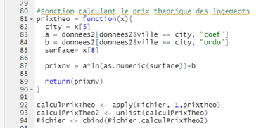
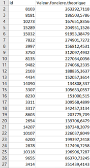
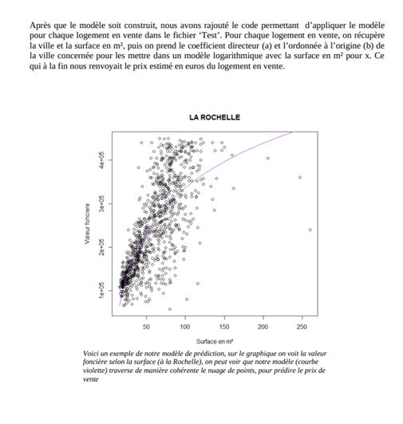

Regression on real data
For this project, we had to build a model that predicts housing sale prices as accurately as possible, then write a text explaining our approach. We had a training dataset to predict the sale prices. We could use various variables such as the type of housing for sale or its floor area. The statistical programming language R was used for these calculations.
To build our prediction model, we first had to choose the variable that would let us predict the housing sale price. An exploratory analysis showed that the most useful variable was the floor area of the home, and since location also matters, we decided to build a separate model for each city, predicting sale price based on floor area.
In order to make our code more efficient and avoid writing the same formulas over and over for each city, we built functions so we could write the code once and apply it to each city.
Skills learned:
- Improving my knowledge of R
- Understanding how linear regression works and when to use it
- Improving my writing skills
Illustrations

The R function that allowed us to use our logarithmic model to estimate the housing sale prices

Results in Excel

Overview of the report